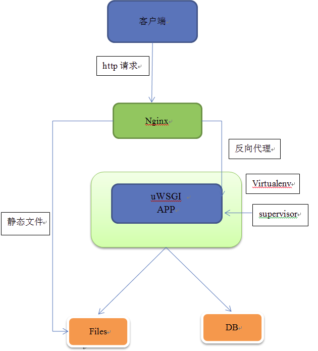

其实简单部署Flask程序很简单，只要掌握了流程和每一层的作用。本来应该再加上Supervisor，不过我还没有尝试，先总结下来uWSGI和Nginx以及遇到的一些小问题以及解决办法

环境
本地环境：Ubuntu16.04
服务器：Centos7.0
Python: 2.7.5
安装SSH
sudo apt-get install openssh-server
编辑配置文件
sudo vi /etc/ssh/sshd_config
禁用：PermitRootLogin prohibit-password
添加：PermitRootLogin yes
重启
sudo service ssh restart
ssh使用
ssh root@远程服务器IP
scp使用
scp: 跨机远程拷贝
从本地到远程服务器
scp 本地文件 远程服务器用户名@远程服务器IP:远程服务器目录
从远程服务器下载到本地
scp 远程服务器用户名@远程服务器IP:远程服务器文件 本地目录
如果是目录则在scp后加-r参数即可
配置Flask
安装pip
sudo yum –y install epel-release
sudo yum –y install python-pip
安装virtualenv
pip install virtualenv
在应用程序目录创建虚拟环境 virtualenv venv
激活虚拟环境: source /venv/bin/activate
安装flask应用程序依赖包
因为pip安装时速度太慢，所以决定更改为pip国内源
对指定包对安装临时使用豆瓣源
pip install flask_sqlalchemy –i http://pypi.douban.com/simple
永久更新源办法 修改配置文件
在主目录下创建.pip文件夹
mkdir ~/.pip
然后在该目录下创建pip.conf文件
vim pip.conf
写入以下内容
[global]
trusted-host = pypi.douban.com
index-url = http://pypi.douban.com/simple
安装Nginx
sudo yum install nginx
配置Nginx
vim etc/nginx/nginx.conf
修改如下
server {
listen 80;
server_name XXX.XXX.XXX; #公网地址
location / {
include uwsgi_params;
uwsgi_pass 127.0.0.1:8001; # 指向uwsgi 所应用的内部地址,所有请求将转发给uwsgi 处理
uwsgi_param UWSGI_PYHOME /root/School/venv; # 指向虚拟环境目录
uwsgi_param UWSGI_CHDIR /root/School; # 指向网站根目录
uwsgi_param UWSGI_SCRIPT manage:app; # 指定启动程序
}
}
Nginx简单指令
启动nginx：
命令行输入nginx或者nginx -c nginx配置文件
关闭nginx：
ps -ef|grep nginx查看nginx 线程ID
kill -QUIT 线程ID
Nginx出现413 Request Entity Too Large错误解决方法
打开nginx主配置文件nginx.conf,找到http{}段，修改或者添加
client_max_body_size 4m;
安装uWSGI
需安装三个库:
1.sudo yum install libxml2
2.sudo yum install gcc
3.sudo yum install python-devel
然后:
pip install uwsgi
配置uWSGI
进入flask应用程序目录
vim config.ini
编辑:
[uwsgi]
# uwsgi 启动时所使用的地址与端口
socket = 127.0.0.1:8001
# 指向网站目录
chdir = /root/School
# python 启动程序文件
wsgi-file = manage.py
# python 程序内用以启动的 application 变量名
callable = app
# 处理器数
processes = 4
# 线程数
threads = 2
#状态检测地址
stats = 127.0.0.1:9191
uWSGI命令
uwsgi 启动 ：虚拟环境下uwsgi config.ini
uwsgi 关闭：虚拟环境下killall -9 uwsgi
部署说明

- uWSGI 提高并发访问支持，提高服务运行稳定性
- Nginx在这里最基本的一个用处就是转发：当客户访问一个域名或者IP时 Nginx就将访问转发给uwsgi处理
- Supervisor可以同时启动多个应用，更重要的是，当某个应用Crash的时候，它可以自动重启该应用，保证可用性
这样uwsgi可以让supervisor帮助启动，而且当uwsgi Crash时会尝试帮重启它，保证uwsgi和网站的可用性
如何理解Nginx, WSGI, Flask之间的关系 ? 这是一篇很好的文章
http://blog.csdn.net/lihao21/article/details/52304119